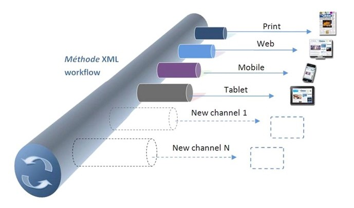

Today’s news organization has been transformed into a TRUE multi-channel, multi-media publishing firm that creates content in various digital format include but not limited to Paper/Web/Mobile/Tablet/TV/Social Media… New publishing platform is produced every day, it is impossible to predict what types of media will be born tomorrow. Smart Team Global has adopted the most advanced technology from the industry leading software firms, EdiosMedia & Autonomy, integrating different products together to present you the TRUE Converged Newsroom Solution.
The solution is fully open XML standard, ready for any new standards in the future. Its core philosophy that enables all of this: separation of presentation from content.
The backbone of the platform is Méthode, an innovative environment for Knowledge/Content Management and Cross-Media Publishing. It offers a single transparent workspace to content creation teams within Communication and Media groups, and provides access to all corporate content through a unique interface: production / live content, archives, wire texts and wire images, etc. Méthode does this by combining the key features of several different applications into one, single system:
The result is a highly flexible environment, extensively configurable to match the working practices of virtually any knowledge creation and publishing environment. The ease with which knowledge resources can be automatically re-packaged and repurposed for delivery to a variety of customers through diverse distribution channels maximizes the value of those resources to the organization, freeing staff to concentrate on the needs of their audiences and the content of the delivery.
The solution also provides the following unique features that makes it the best solution for news organizations.

Méthode Portal Server is a sister product of standard Méthode Server, it is deployed as the runtime of the Méthode server, providing content caching and User Generated Content modules, like user registration, blog & forum. As a plug & play module for EdisosMedia Méthode platform, it has been proven a light weight and easy to adopt solution for standard news organizations that does not present complicated presentation and web optimization.
Autonomy TeamSite/OpenDeploy/LiveSite is one of the most popular Enterprise Web Content Management solution in the market today. A lot of world famous enterprises and government agencies have adopted it as their key component in its infrastructure. Its powerful, design for Enterprise framework “just works” against massive quantity and types of content, both structured and un-structured. As the key component of the Meaning Based Marketing sector of Autonomy, its core Autonomy IDOL enterprise search engine provides the understanding of the content and supports multiple key functions: web optimization, content targeting, user profiling, etc.
Most global news organizations today present their content in Newspaper, Website, Mobile, Tablet and TV. Video becomes more and more popular in today’s news world. As the dominant player in Rich Media Management domain, Autonomy Virage provides a full set of technologies to resolve the following most complicated challenges to the News Enterprises.
As the only solution provider that understands both Autonomy & EdiosMedia technologies, Smart Team Global has presented this solution to the News Organization worldwide and received positive feedbacks. Its transparent open XML standards makes the implementation much easier and reduce significant customizations compared to other old timers still in play. We believe technology is the key driver in the news media industry and this solution is the future.


 Email Us
Email Us Online Chat
Online Chat Smart Team Channel
Smart Team Channel